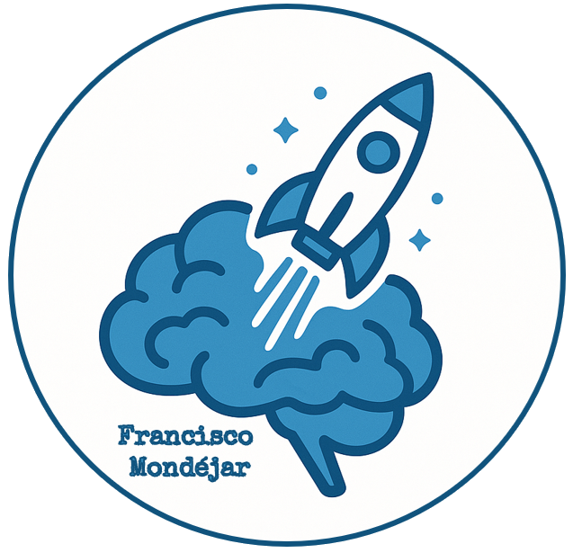
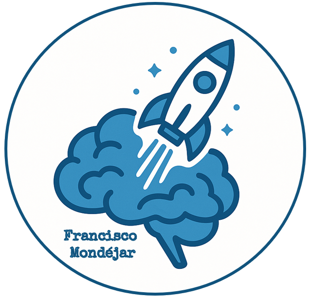

MISIÓN CLIMÁTICA
Año 2026. El planeta no ha dejado de girar, pero algo ha cambiado. Las decisiones económicas del pasado han trazado una trayectoria invisible que ahora empieza a hacerse visible.
Las temperaturas aumentan. Los recursos se tensan. Y, por primera vez, una generación tiene delante los datos… y la capacidad de actuar.
ROL: Equipo de análisis y diseño de soluciones sostenibles
OBJETIVO: Comprender el impacto del crecimiento económico y diseñar una empresa social capaz de reducir la huella de carbono
Tu misión
Trabajaréis en equipos cooperativos para analizar, mediante el simulador digital EN-ROADS, cómo el crecimiento de la población y el desarrollo económico influyen en las emisiones de CO₂ y en el calentamiento global. Usad las herramientas que consideréis pertinentes para la misión: hojas de cálculo, editores de texto, maquetas, otrso simuladores, ...
A partir de los resultados obtenidos, deberéis diseñar una empresa social capaz de intervenir en esa realidad, definiendo el problema que aborda, la solución propuesta y el impacto positivo que genera.
Finalmente, vuestra propuesta será presentada y difundida a través de una red social educativa, transformando el conocimiento en acción y el análisis en cambio.
El futuro no está escrito. Está esperando decisiones.
Diseñada por Francisco Mondéjar · Licencia CC BY-SA 4.0
 
